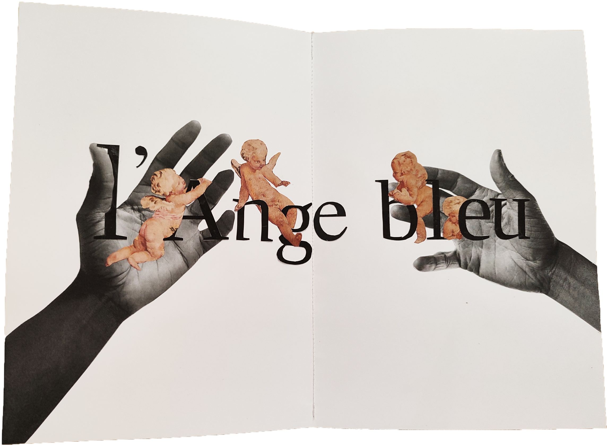
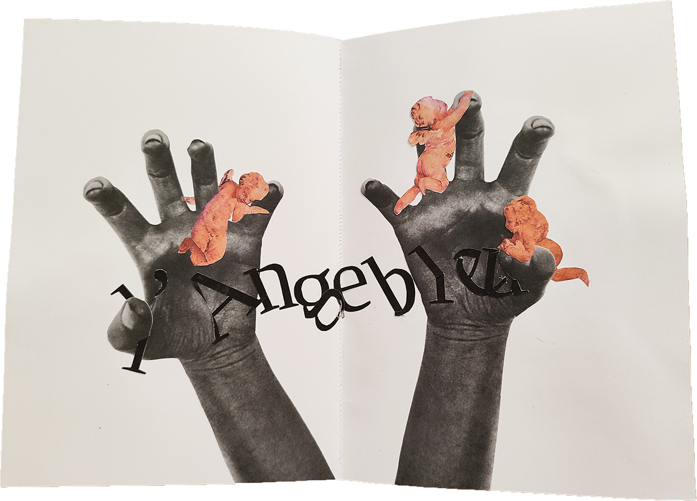

Ce projet consistait à sélectionner un article de presse dans divers domaines (politique, musique, scandales, etc.). L’objectif était de collecter des images et des mots dans des journaux, magazines ou prospectus, puis de les réassembler pour créer un livret relié à la main. L’enjeu était de transmettre un message clair à travers ce travail de découpage et de montage. Une approche symbolique a été adoptée, avec des anges découpés dans des magazines d’art, en référence à l’association « L’ange bleu ». Ce choix soulignait l’ironie entre la pureté traditionnellement associée à ces figures et la gravité du sujet abordé: la pédociminalitée.
ÉDITION
L'ANGE BLEU


